ശേഖേമില്നിന്നു ബെതേലിലേക്കു*
വൃത്തം --മാകുന്ദമഞ്ജരി
മുക്കം പറഞ്ഞതു കേട്ട താല്ലാലിക-
ദുഃഖമൊരല്പമടങ്ങീടിലും
ചിക്കെന്നു ചിന്താപവനനടിക്കയാ:
ലുയംക്കടല് കോപിച്ചിളകി യേററം
എപ്പോഴാണാരാണകത്തു കടന്നു ത-
൬൪ഭകരേയ്യം വനുക്കളേയ്ം
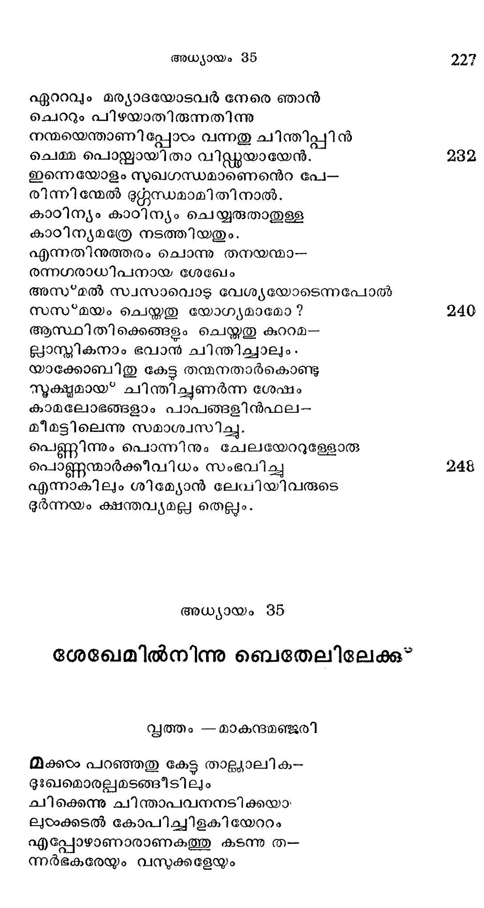
സ്വപ്രാണനേയും നശിപ്പിച്ചിടന്നതെ--
അരുഭൂമമല്ലേതരം കലരന്നു
ജീവന് മരണമിവള_ു മദ്ധ്യത്തിലായ*
മേവി യാ മത്ത്യന് ദിനം കഴിച്ചാന്.
അഭ്യര്ണ്ണ ദേശത്തു രണ്ടു പേര് ചേര്നെന്തോ
ഗുപ്തമായ സല്പപിക്കും സമയം
തന്ഗ്രഹത്തിന്നു വി രോധമായ* കൂടിയ
വന്ഗണമെന്നവനോര്ക്കുകയാല്
ഭീതിയുമാധിയും മോതി മനോഭിത്തി
പാതിതമാവാന് തുടങ്ങിടുമ്പോടം
സയവ്വചജഗദീശന് യാക്കോബി നേക്കണ്ടു
നിര്വ്യാജമേവമരുളിച്ചെയ്ത:
എന്തിനു നീ മനശ്ലാന്തിയില്ലാതിങ്ങു
സന്തപ്പ ചിത്തനായ്ക്കാത്തിുന്നു.
ആദിയില് മാമക ദര്ശനം നൽകിയ
ബേതേല്സ്ഥലത്തെ നീയോക്കുന്നില്ലേ?
അങ്ങു ചെന്നീടുക തുംഗമാമിപ്പുരി
ഭംഗമേകും നിങ്ങടംക്കെങ്ങി നെയ്യം.
ഇസ്ഥലത്തിത്രനാടം താമസിപ്പാനൊരു
യുക്തമാം ഹേതു ഞാന് കാണുന്നില്ല.
മാമക ദര്ശനമില്ലാതെ യിത്രനാടം
ഭീമമാമി സ്ഥലത്താവസിപ്പാന്
താവകുചിത്ത മനുവദിപ്പാനെന്തു
കാരണം? പാറയോ മത്സ്യവാസം ?
ഉത്തമന്മാര് വസിക്കേണ്ടുന്നതീവിധ-
പത്തനം തന്നിലല്ലേതുനാളം
ആകയാലിജ്ജന സന്നിധിവിട്ട നീ
വേഗമധിവസിക്കാസ്ഥലത്തെ.
അലവ്വിടത്തില് ഭവാന്നാവിര്ഭവി ച്ചൊരു
മംഗളാത്മാവിന്നു യാഗപീഠം
നിര്മ്മിച്ചു പൂജ കഴിക്കുക യാത്രയില്
ശര്മ്മമരുളിയതപ്പരേശന്.
വാക്കുകളിത്ഥം ശ്രവിച്ചു യകടബകന്
കീഴ*ക്കഴിഞ്ഞുളള കഥകളോത്താന്.
ഹാറാനിലേക്കുള്ള ദീര്ഘമാം യാത്രയില്
കൂറാണ്ടഖിലേശന് പാലിച്ചതും
ആക്രമിക്കാന്വന്ന മാതുലന് തന്നുടെ
വിക്രമമാകെ നടക്കിയതും
ഏശാവിനാലതി ഭീതനായെങ്കിലും
മോശം വരാതത്ര രക്ഷിച്ചതും
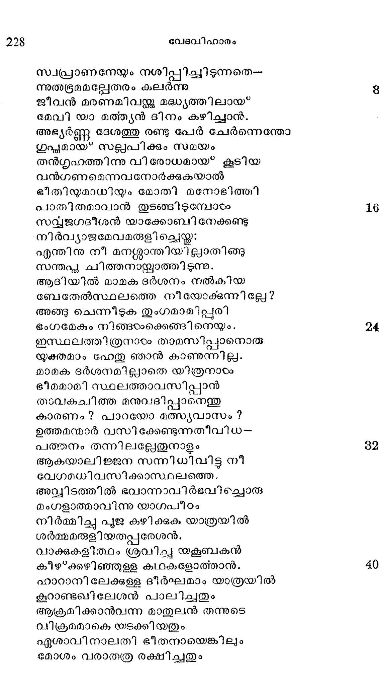
ശേഖേമ്യരാലിന്നേയോളവും യാതൊരു
ചേതവും പററാതെ സൂക്ഷിച്ചതും
ചിത്തേനിനച്ചവന് സവ്വേശ കാരുണ്യ
മത്യത്ഥമെന്നു കരുതുകയാല്
ഈശ്വര സന്നിധി തന്നിലശ്രുക്കളോ--
ടീവിധം പശ്ചാത്തപിച്ചുരച്ചാന്:
സാധുജനങ്ങഠംക്കവലംബമെ! മഹാ--
സാധിഷ്കറൂത്തേ! സമന്മനാഥാ!
നിന് കൃപയാകുമമൃതമനുഭജി--
ചങ്കരിതാപൽ ക്ഷുധയകററി
വന്നേനിതുവരെ നന്ദിയില്ലാതതീ-
മന്ദനായുള്ള ഞാന് തമ്പുരാനേ!
മാതുലഗേഹം വെടിഞ്ഞു പുറപ്പെട്ടി --
ട്ടേതത്സമയം വരയ്ക്കുമയ്യോ !
പത്തുശരത്തോളമായെന്നിരിക്കില--
മുത്തമ! ബത്തേലിലെത്തിയങ്ങേ
പത്തുവണങ്ങവാന് ശ്രദ്ധവച്ചില്ലതുയ
യ്യക്തമല്ലെന്നു തപിചിടുന്നോന്.
നേര്ച്ച കഴിച്ചിട്ട ലംഘിപ്പതില് ഭേദം
നേരാതിരിപ്പതു തന്നെയല്ലോ.
ഞാനതു ചെയ്യാതെ മാനിയായ് പാര്പ്പതു
ഹീനതനയെന്നു ഗണിച്ചിടന്നേന്.
ഇങ്ങോട്ടുപകാരം ചെയ്ത ഭവാനെന്നാന്
അങ്ങോട്ടപകാരം ചെയ്തു പോയേന്.
നിന് ഭജനവിധി തന്നിലസക്തനാ-.
യമ്പരന്നേന് കുടുംബാവനത്തില്
എന് ഭവനത്തില് പലേതരം മ്ലേച്ഛത
സംഭവിച്ചുള്ളതറിയുന്നു ഞാന്.
മാമകഭാര്യാ തനയരിലിപ്പോഴ-
മാമയമേറി വളര്ന്നു നിലപ.
എന് കഥയ്യമതിന്നല്ലവും ഭൂരെയ--
ല്ലിംഗിതാഭിജ്ഞ! ക്ഷമിക്കുകെല്ലാം.
ഈ വിധം പ്രാത്ഥിച്ചു തന് ഭവനസ്ഥരോ--
ടാവില ചിത്തനായേവമോതി;
യുഷ*മല്കരസ്ഥരാമന്യദേവന്മാരെ
നിഷ്കാസിച്ചീടിന് നിസ്റ്റംശയമായ്.
ശുദ്ധീകൃതരാവിന്, വ്രസ്തങ്ങംം മാറുവിന്,
പ്രസ്ഥാനം ചെയ്ക ബതേലിന്നു നാം
മാമകദുഃഖസമയമെന് പ്രാത്ഥന
കാമാനുരോധം ശ്രവിച്ചെനിക്കു
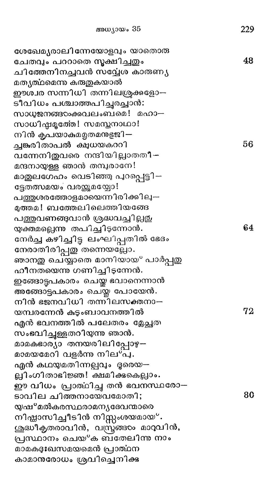
പ്രാത്ഥിതാത്ഥം നല്കിയാശ്വസിപ്പിക്കയ
മദ്ധ്വാവിലൊന്നായ* നടക്കുകയും
ചെക്കൊരു ദേവന്നു യജ്ഞത്തറയൊന്നു
കൈതവമെന്ന്യേ രചിക്കുവന് ഞാന്
മന്ദിര നായകന് തന്നുടെ വാക്കുകഠം
മന്ദിരവാസികടഠം കേടുനേരം
കൈവശമുള്ളോരു ദേവബി ംബങ്ങളം
ടദൈവത്രൂപമാം ഭൂഷകളും
പെട്ടെന്നെടുത്തു കൊടുത്തു യാക്കോബാകുംം
വിഷ്യപനാഥനന്െറ ദാസന് പക്കല്.
ആയവനീവക യേലാമരക്ക്ീഴി-
ലായതമോദം കുഴിച്ചു വച്ച.
ശുദ്ധിക്രിയയേവം ചെയ്തതിന് പിന്പവന്
യാത്ര തുടര്ന്നു ബതേലിലേക്ക.
ദഭിവ്യസ്ഥലങ്ങളില് ചെല്ലേണ്ടുമാളകഠം
ഭവ്യത ശുദ്ധിയാല് തേടിടുന്നു.
പട്ടണം വിട്ടവര് പോകുന്ന സംഗതി
ദുഷ്ടരാം പയരക്കഖിലര്ക്കുമേ
രൂട്ടളവാക്കി യെന്നാലും തട ചെയ്*വാ-
നൊട്ടമൊരുങ്ങിയതില്ല ടദൈവാല്.
കാരണം സാരമാം ദിവൃതേജസ്റൊന്നു
പാരിച്ചുകാണായി യാത്രികരില്
ആര്ക്കുമടുപ്പാന് കഴിയാവിധം കാന്തി
നേര്ക്കനേരേ നിന്ന ഹേതുവിനാല്
പയരരശേഷം ഭയന്നു തൂണ്പോലവേ
ചോരമയമററു നിന്നുപോയി.
കാന്തി ച്ലടയിീന്നു കൊള്ളിയാനെന്നപോ-
ലെന്തോ മഹത്തായ ദീപ്തി യൊന്നു
ഘോരശരം പോലവരുടെ നേര്ക്കണ-
ഞ്ഞാരാല് വരുന്നതായ* തോന്നുകയാല്
പേടിച്ചു പിന്നോക്കമോടിക്കുഴികളിൽല്
ചാടിപ്പതിച്ചു ചിലര് കിടന്നു.
ബോധക്ഷയംപൂണ്ടു വീണാര് ചിലര്, ചില-
രാധിയാല് നെഞ്ചു തിരുമ്മി നിന്നാര്.
കണ്ണിരുട്ടിചചു ചിലര്ക്ക, ചിലരുടന്
തണ്ണീര്കുടിപ്പാന് പരിഭൂമിച്ചാര്.
എന്തിനധികമുരച്ചിടുന്നു! പയര-
രന്ധതയാര്ന്നു ൭ല്ക്കാഴ് മൂലം.
അജജനം കണ്ടു മരച്ചു നില്ക്കത്തന്നേ
ലജ്ജവിട്ടിസരയേല് യാത്ര ചെയ്ത.
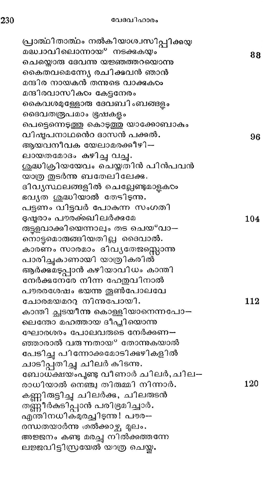
സ്വാപരാധങ്ങളില്നിന്നു വിമോചന-
മാപിച്ചവര്ക്കുണ്ടോ? ഭീതിയല്വം
ടദൈവചൈതന്യ മധിവസിച്ചീടുകില്
കൈവരും ശത്രഗണവിനാശം
ഇങ്ങിനെ യിസ്രയേൽ ശേഖേമില്നിന്നു തന്
തുംഗകു$ടംബവുമായി ബത്തേല്
എന്നയിടത്തിലണഞ്ഞു മഖകമ്മം
നന്ദ്യാ നടത്താനുപക്രമിച്ച.
യജ്ഞം വെടിപ്പായ കഴിഞ്ഞശേഷം സ്ഥിര-
പ്രജ്ഞനാം യക്കോബു തല് സ്ഥലത്തേ
ഏല്ബതേലെന്നു വിളിച്ചാനതിനത്ഥ-
മീശന് ബതേലിനെന്നങ്ങു ചൊല്ലാം.
ഭദബോറയുടെ മരണം
അത്ര പാര്ക്കുമ്പൊഴുതിസ്റ്റഹപത്രന്നു
ചിത്തസംക്ഷോഭമുളവാംവണ്ണം
മാതാവിന് ധാത്രി ദബോറന്ക്ക രോഗമെ -
ന്നോതിയൊരാടം വന്നമിത ദുഃഖാല്.
കേട്ടൊരു മാത്രയില് യാക്കോബന് തന്നുടെ
ശിഷ്ടഹൃദയം തപിച്ചതുലം
രോഗിണിക്കേററ പരിചര്യ ചെയ്യിച്ചാന്
ത്യാഗികരഠംക്കമിതു വേണ്ട കൃത്യം
ശൈശവകാലത്തില് തൽഭൂജ വല്ലിയാം
പേശലത്തൊട്ടിലിലിട്ടകാത്തും
ലേശമൊരു ദുഃഖമേശിടായ*വാന് പര-
മേശനോടത്ഥന ചെയ്തമപ്പോല്
വീണുകിടന്നു കരയുന്ന നേരത്തു
ചേണുററ മാവ്വിലണച്ചുമയ്യോ
പാലിച്ച തന് വളര്ത്തമ്മ വാദദ്ധക്യ-
കാലത്തു നിഷ്കൃതി ചെയ്യുവാനായ*
സമകര്യമുണ്ടാക കാരണം യാകുബന്
ലോകൈകനാഥനെസ്റ്റുന്നമിച്ചു.
വേണ്ടശുശ്രൂഷകയം ചെയ്യുകിലും ഗദം
മണ്ടമറിഞ്ഞു വളര്ന്നുപാരം
പണ്ഡിതന്മാരാം ഭിഷക്കുകളം വെടി -
കൊണ്ടപോല് വാങ്ങിയൊഴിഞ്ഞു പോയി.
രണ്ടുനാലഞ്ചുനാടം ചെന്നപ്പോടം രോഗിണി
വിണ്ടലവാസമുരീകരിച്ചു.
യാക്കോബവളടെ ദേഹമെടുത്തത്
ദുഃഖമോടബ്ബെതേലിങ്കലുള്ള
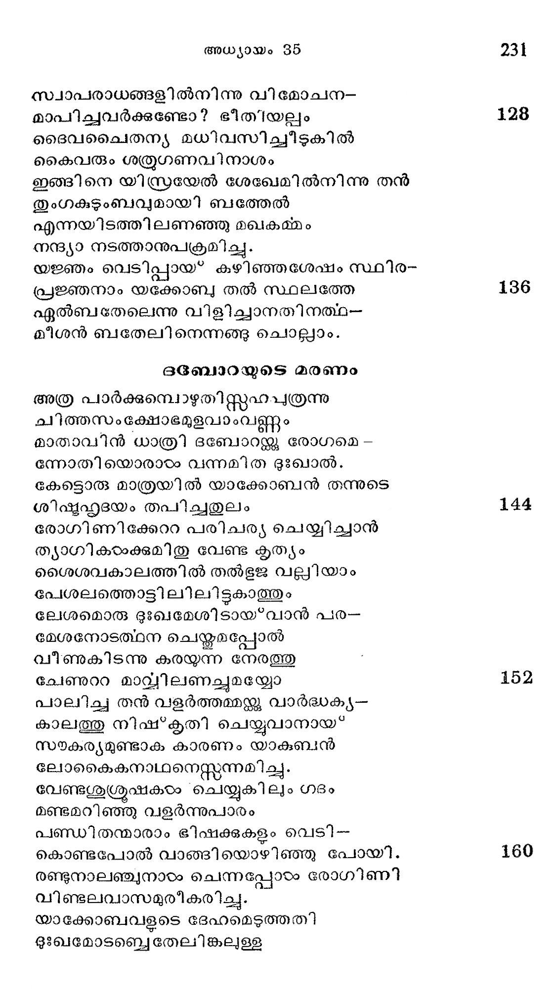
ഓക്കുമരത്തില് ചവട്ടിലടക്കി നി--
രറ്റളബാഷ്കും പൊഴിച്ചുരച്ചാന്.
എന്നുരുമ പ്രസുതന്നുടെ ദാസിയാ-
യ്ത്തന്നേ നിജായ്യസ്്തിവൃയിച്ച
കന്നല് മിഴിമണേ ! നിന്നുടെ സല്ഗഥഗുണ-
സന്ദോഹമെങ്ങിനെ വാച്യമാകും.
തന്നുടെ നാടും ഗൃഹവും വെടിഞ്ഞു നിന്
ധന്യയാം സ്വാമിനിയോടുകൂടി
ഭര്ത്തുസുഖാദികരം സന്ത്യജിച്ചെങ്ങളിൻ
വാസ്തുവില് ഞങ്ങളെ സംരക്ഷിപ്പാന്
വന്നുചേര്ന്നന്നു തുടങ്ങി വിഷമങ്ങഠം
നന്നായനുഭവിച്ചെന്നതോര്ത്തു
കണ്ണുനീര് വാര്ത്തു വശംകെടുന്നേനിനി-
മണ്ണില് നുവിശ്രാന്തയായി വാഴ.
എത്രയോ ദുര്മ്മുഖം കാണിച്ചു നിന്െറ നേ-൦
ക്കെത്ര ശകാരം പറഞ്ഞു നിന്നേ
എങ്കിലുമായവ സയഖ്യപ്രദമെന്നു
തന്നെയുരചെയ്ത നിന് മുഖാബ*ജം.
എത്രമാത്രം ക്ഷമയെത്ര പരിശ്രമം
എത്ര വിനയം സുതപ്രണയം
എത്ര സവ്വേശ്വരഭക്തിയിവയെല്ലാം
മൂര്ത്തീകരിച്ചവഠം താന് ഭവതി.
ദുഃഖജനകമാമീ നിന് വിയോഗത്തേ
പാര്ക്കുവാനെന്െറ ജനനിയി പ്പോഠം
ജീവിച്ചിരിപ്പില യലായ്കിലായവ-൦
ളാവിഗ്നയാവുൂ മനോവ്യഥയാല്.
എന്പ്രനുവെന്നെ പ്രസവിച്ചുവെങ്കിലു-
മന്പോടു പോററിയോടം നീധൊരുത്തി.
നിന് പരിചര്യകടം ക്കേതാനുമെങ്കിലും
നിഷ്*കൃതി ചെയ്*വാനശക്തനീ ഞാന്
ഭൂര്ബലമായ തവ ശരീരം മൂദി
ദുര്ഭഗന് ഞാനിതാ സസ്കരിപ്പ.
എങ്കിലുമാര്ക്കും മറക്കവയ്യാ നിന്െറ
പങ്കവിഹീന ഗുണങ്ങളൊന്നും.
ഏവം വളരെ വിലപിച്ചു പിന്വാങ്ങി--
യാവിന് പടദഭക്തനിസ്രയേലന്.
ഈ വിലാപത്താല് വിലപനന്വക്ഷമെ--
ന്നാവിടപിക്കവനേകി നാമം.
ദേവഭവനമെന്നാഖ്യ പെറുമിതേ
പാവനഭൂമിയില് വച്ചു ദൈവം
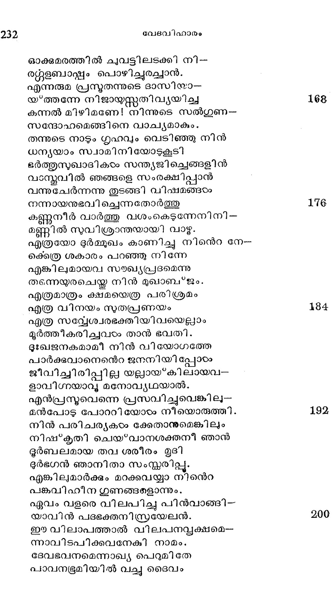
ആവിര്ഭവിച്ചു യക്ബന്നു മുമ്പുള്ള
സംവിത്തു വീണ്ടും ദൂഡ്ീകരിച്ചു.
തല്ലേഷമായിട്ട യാക്കോബൊരു സ്മംഭ-
മുചൈന്യരം നിര്ത്തിയായതിന്മേല്
പാനീയയാഗം തിലജമിവയൊടഴ്-
കച്വാനേതൃപാദം വണങ്ങി നിന്നു
പിന്നെപ്പുറപ്പെട്ടാര് ബത്തേലീല് നിന്നവ-
രൊന്നിച്ചു യാത്ര തുടര്ന്നു ബാഡം.
ബന്യമീന് ജനനം
എഫ്രാത്തു ഗ്രാമത്തിന്നഭ്യാശത്തായപ്പോഠം
ഗര്ഭവതി റാഹേലാമനസ്യാല്
വേദനപ്പെട്ട നിരുപമമാം വിധം
സാടദമനല്പമുളവായ* വന്നു.
കക്കശമായ പ്രസൂതിജ ബാധയാ
ശുക്രനിപാതിതതൂലം പോലെ
എത്രയും വെന്തു ദഹിച്ചാളവളോടു
സത്വരമോതിനാടരം ധാത്രിയേവം.
ഇഷ്യേ! ഭയം വേണ്ട വേദന തെല്ലൊന്നു
തുഷ്ടി കലര്ന്നു സഹിക്കുക നീ.
തുംഗമായ്യള്ളൊരു ലാഭമിരിക്കുമ്പോടം
ഭംഗമേതാനും സഹിച്ചുകൂടേ?
അബ്ദിയിന്നാഴത്തില് മുങ്ങിക്കുഴയവോര്
മുത്തു ലഭിച്ച കൃതാര്ത്ഥരാവൂ.
ആണ്കുട്ടി യൊന്നു ജനിപ്പാന് തുടങ്ങുന്നു
വീൺ കഷ്ടമെന്നു നിനജ്ക്കുവേണ്ട.
ഈദൃശവാക്കുകഠം യോഷിന്മണിയുടെ
കാതുകളില് കടന്നീടും മുന്പേ
ഹാ! മൃതി രാക്ഷസന് വന്നവളെ ഹഠാൽ
ഭൂമിയില്നിന്നു ഹരിച്ചു കഷ്ടം.
ജീവനവളോടു യാത്ര പറയുന്നൊ
രാവിഷമാവസരത്തിലവംം
കഷ്യസമുല്ഭൂതപുത്രനെന്നാശയം
സ്പപഷ്ടമാക്കും ബനോനീതിനാമം
ഇട്ട ശിശുവിനെന്നാലും പിതാവതു
തട്ിക്കളഞ്ഞതി വത്സലത്വാല്
ബന്യാമിനെന്നാക്കി തന് വലമ്ൈകൈമക
നെന്നത്ഥമുള്ള പേരാകമുൂലം
യാക്കോബിനുള്ളം ക്രമാധികം സ്നേഹിച്ച
നല്ക്കാറണി വേണി റാഹിലയേ
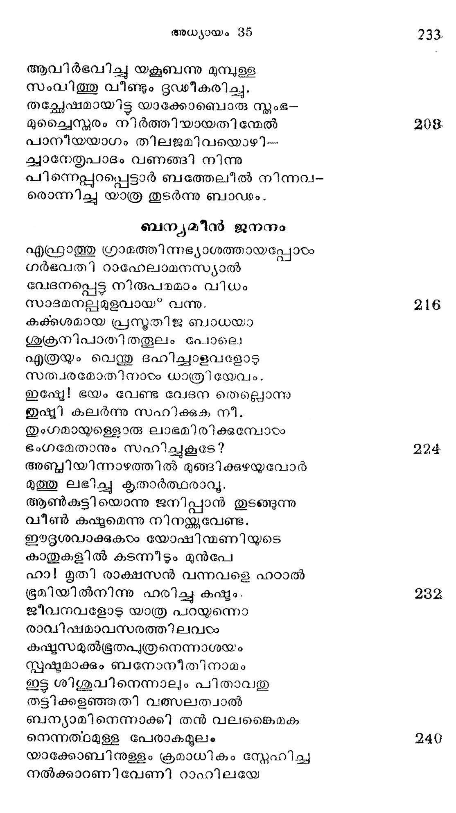
എഫ്രാത്തി ലേക്കുള്ള പാതന്ക്കുരികിലാ -
യബ്രാഹ പത്രേനടക്കിയന്നാഠം.
ഇശ്മശാനോ പരിന്ംഭമൊന്നോമ്മ്ക്കു
നുക്ഷ്ഠഭനത്രന് സ്ഥാപിച്ചി സ്രയേലന്.
പിന്നെയവിടുന്നു യാത്ര തുടങ്ങിനാന്
സന്നുതഭക്തന് പദാപഹാരി.
ഏദേരിതിനാമഗേംപപരം പിന്നിട്ട
മോദാലുറപ്പിച്ചാന് വന്സ്രവേശും.
അക്കാലം ബില്ഫഹയാം താതോപപത്നിയേ
ഭുഷ*കൃത്ൃക്കുണ്ടില് പെടുത്തി രൂബന്
ഇസ്രേലിതുകേട്ട മിണ്ടാന് കഴിയാതെ
സ്വസ്വാന്തഗര്ഭേ മറച്ചു വച്ചാന്.
യാക്കോബിനാദിമഭാര്യയാം ലേയയി.-
ലൂക്കര് ചില നുതരുണ്ടായവന്നു.
രൂബന് ശിമയോനും ലേവി യഹഛൂദയും
ഭാവനിസ്റ്കാക്കര് സെബുലന് പിന്നെ
ദാസിയാം സില്ല സവിച്ചുള്ള ഗാദി നോ--
ടാശേറിവരു ചേര്ന്നെടുട മക്കാം.
റാഹില തന് സുതന് യോസപ്പ ബന്യാമിന്
മോഹന രൂപിണി ബില്ഹ തന്െറ
പുത്രരായ്ള്ള ദാന് നപ്ലാലിയിങ്ങനെ
ഇസ്രയേല് സന്തതി പന്തിരണ്ടാം.
യാക്കോബ്” ഹെബ്രോനിലേക്കു പോകുന്നതു"
ആജക സങ്കേത മെന്നത്ഥമുള്ളൊരു
ഭ്രാജദിശയാമെദേരില്നിന്നു
പാദാപഹാരി പുറപ്പെട്ട തന്നുടെ
താതസവിധ മണയുവാനായ*
ഓരോ ചുവടുകടം വയ്ക്കുന്ന മാത്രയില്
സാരതരമാം സ്വദേശ സ്പേഹാല്
പാരമിളകിയവന്നകതാരകൂ--
പാരമതില് തിരമാല പോലെ.
വര്ഷമൊരു മുപ്പതായിതു ദര്ശന--
തര്ഷ മുദി്ക്കുകില് വിസ*മയമോ ?
വര്ഷാഗമേല്ഛ*ശുവാം കര്ഷകന് വൃഷ്ടിയാല്
ഹര്ഷഫഷ്ൃദയനാമി ല്വാടം
കണ്ടു പഴകി യോരീിന്തല് മരങ്ങളും
തണ്ടു വളഞ്ഞുള്ള ദ്രാക്ഷകളം
നീണ്ടു നിലകൊള്ള മത്തിവ്ൃക്ഷങ്ങളും
കണ്ടതി തുഷ്ടനായാക്കമോടെ
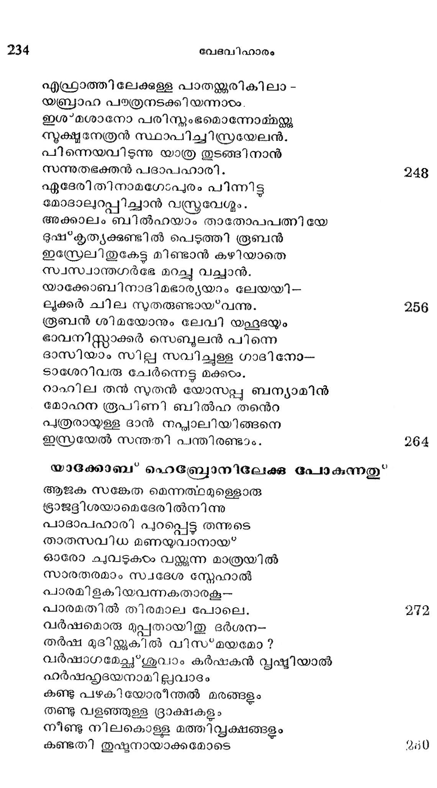
താതനിവാസ മുദ്ദേശിച്ചു സത്വരം
ജാതകയതൂഹലം സഞ്ചരിച്ചാന്.
കൂടമുയര്ന്നു നിലകൊള്ളം പവ്വത-
കൂട്മരികിലണഞ്ഞു ചെല്ലം
കൂടലര് കാലനാമിസ്റ്റഫ പുത്രനേ
ഗാഡമാം വിസ*മയത്തോടുകൂടി
കാണുവാന് തന് തല പൊക്കിനിന്നീടുന്ന
ചേണില് വിളങ്ങി വിതര്ക്കമെന്യേ.
മുന്പില്നിരന്നത്ി ഭംഗിയായ? നിലക്കുന്ന
ശൂംഭല് ദ്രമങ്ങഠം പവനനാലെ
കമ്പനമാര്ന്നിട്ട ശാഖാംഗുലി കളാ--
ലന്പെഴമി സ്രേല് മഹാരഥദനേ
മാടിവിളീക്കുന്നുവെന്നുതോന്നും വിധ-
മാഭിസ*ഫുടാദരം നിന്നിടുന്നു
ഭുഷ്ടയനാം ലാബനേ വിട്ടിങ്ങപോന്നതു
ശിഷ്യത താനെന്നു നിവ്വിവാദം
ചട്ടററനാദത്തില് ചൊല്ലിയ മടില-
സ്പപറഷ്ടഷരുതമുതിര്ത്ത ഭൂഗങ്ങയം.
ഭൂമിയിളംതൃണ വ്യാജേന രോമാഞ്ച്--
മാമെയ്യിലെഞ്ടും ധരിച്ചു നില്ക്കേ
യാക്കോബു തന് പിതു ഗേഹത്തിലെത്തിനാന്
സ്വറ്റേഹമെത്തുന്ന ദേഹിപോലെ.
ഹെബ്രോന് വിശുദ്ധാശ്രമം
ഹെബ്രോനിതി ഖ്യാതിതിങ്ങും പുരാണിയാ-
മബ്രാമിന്നുള്ള നിവാസഭൂമി
തൽസുതനിസ്ത്ാക്കിന് സാന്നിധ്യ ഹേതുവാല്;,
സല്സംഗഭംഗി കലര്ന്നു കണ്ടാന്.
ഏററം തപശ്ശക്തി യേന്തു മൂഷിയുടെ
കുററമറേറാരുടജത്തി നേക്കാഠം
എത്രയോ പാവനമായിരുന്നബ്രഹാം
പുത്രനിരുന്നരുളം നിവാസം.
വീരഭടാഗ്രയന്മാര് ശ്രസ്തം കരങ്ങളി -
ലാരും വിറയ്ക്കും വിധമുയര്ത്തി
ഭൂരമണാവാസം കാത്തിടും രീതിയില്
പാരമിസ്റ്റാക്കിന് നികേതനത്തേ
നാലുവശത്തും വളഞ്ഞു നിലകൊരടംവൂ
സാലസമാനം മഹാതരുക്കയാം.
ആയതിന്നപ്പറമായത ഭംഗിയി.--
ലായിതാ കൂപമൊന്നുണ്ടു കാണ്മു.
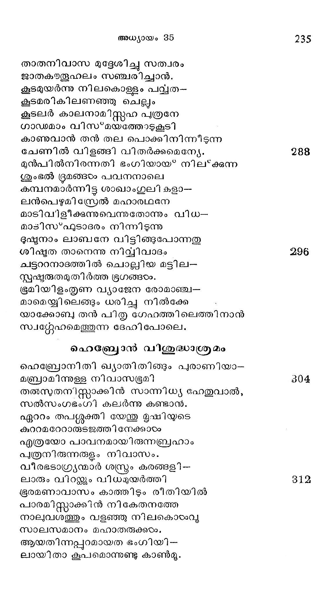
തോയമതിലുള്ള താകവേ തല്ഗ്ൃഹ
നായകചിത്തംപോല് ശുദ്ധമാകും
കണ്ണാടിയ്ക്കൊത്തു വിളിങ്ങി മനശ*ശുദ്ധി
തിണ്ണം പകരുമെവ്വസ്തവിലും.
ആഗതയ്ുകന്മാര്ക്കു പാപപരി ഹാര--
മേകുന്ന മട്ടില് സുഗന്ധമാകും
ധൂമവിതാനത്തേ സഞ്ചലിപ്പിച്ചുകൊ--
ണ്ടാമുനി മന്ദിര ചത്വരത്തിൽ
കാമമിലകി വിളങ്ങുന്നു ലോകൈക
ക്ഷേമകരമൊരു യജ്ഞവേദി.
ആതപാപായത്താല് മുററത്തു കൂട്ടിയ
ഗോധുമസഞ്ചയത്തിന്നരികിൽ
ഏണസമൂഹ. കിടന്നു രോമസ്ഥനം
വേണുന്ന മട്ടിൽ നടത്തിടുന്നു.
അംബധി തന്നുടെ തള്ളലിനാല് സ്വയ-
മങ്ങുമിങ്ങും വിചരിച്ചിടുന്ന
വെഞ്മതിരണ്ടഹിമാനികളെന്നപോ--
ലമ്മുനിവാസ ഗൃഹഃ്കണത്തില്
ആട്ടിന് കിടാങ്ങരം കളിച്ചു നടന്നിതു
ദൂൃഷ്മികയംക്കാനന്ദമാം വിധത്തില്.
ഐകമത്യം, മഹത്സാന്നിദ്ധ്യ വൈഭവം,
വൈകാര്യമേശാത്ത സ്ൃഷ്മിബന്ധം,
എന്നിവ ഭംഗിയായ് കാണിക്കും മട്ടില--
സ്തുന്ദരമാം മുനി മന്ദിരത്തില്
അന്യോന്യ വൈരുദ്ധ്യമുള്ള കനാന്യരും
മാന്യരെബ്രായരു മൊന്നുപോലെ
ചേര്ന്നു വിളങ്ങിനാര് കാളിന്ദി ഗംഗയില്:
ചേര്ന്നുല്ലസിക്കുന്ന രമൃതയില്.
തന്നുടെ പ്രേമനിധികളാം പുത്രന്മാ--
രന്യദിഗ്വാസാത്ഥം പോയിരിക്കേ
സ്വസ്ഥലം വിട്ട തന് താതന് നിവസിച്ച.
പത്തനമര്ബ്ബയെ ന്നാഖ്യ കോലും
ഹെബ്രോനിലെത്തി മരുവും സമയമാ-
ണുടംപ്രിയം തിങ്ങും കനിഷ്ഠഷപത്രന്
ഇസ്രേലവിടത്തു ചെന്നി തതു മൂല--
മിസ്റ്റാക്കിനുള്ളം കുളര്ത്തു വീണ്ടും.
ന്രമൃശിരസ്ക്കനായ* യാക്കോബു ചെന്നുടന്
മ്രമുനിവാസിയാം തന് പിതാവിൻ
വാര്ദ്ധകം കൊണ്ടു ജരിച്ച പാദങ്ങളെ
പേര്ത്തു മഭിവന്ദിച്ാത്തമോദന്
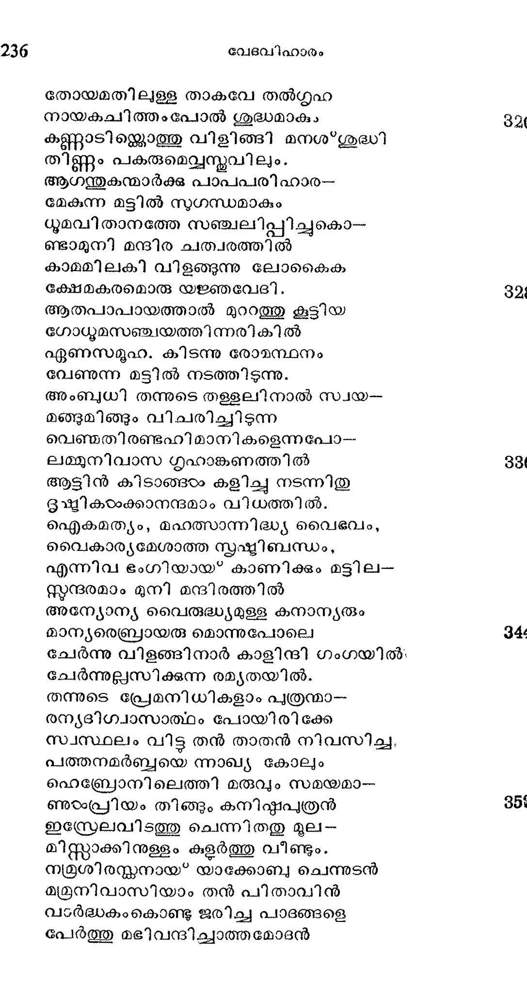
ഈദ്ദശമാറമാം വന്മരു പിന്നിട്ട
താതനാം ശീത്ളച്ഛായ കോലും 860
പാദപം തന്നുടെ ദൂലമണഞ്ഞസു--
ഖാതപ ക്ലാന്തിയ മാഹനിച്ചു.
ഇസ*ഹാക്കിന്െറ മരണവും ശവസംസ'*കാരവും
യധാക്കോബിരുന്നു പോരുന്ന ദിനമൊന്നില്
സംഖ്യവിഹീനനാ യിസ്റ്റഹാകന്.
മഭൂതൃശയനമധിരൂഡനായ് ക്ഷണം
പ്ലഥ്വിയില് നിന്നു മറഞ്ഞു ഭക്തന്.
വര്ത്തമാനമിതു യാക്കോബു തന്നുടെ
ജ്യേഹ്ാസഹോദരസന്നിധിയില് 868
ബോധനം ചെയ്ത; സപദിയവനത്ര
യാതനായ* താത ശരീരം കണ്ടു.
ജ്യേഷ്ഷാനുജന്മാരിരുവരുമാഗ്ലഗവം
ബാപ്ജലത്താല് കഴുകി ശീഫ്രം
ഭക്തിപ്രണാമസുഗന്ധദ്രവ്യം പുശി
ശുദ്ധതരപ്രേമശുഭ്രവസ്്രം
ചുററിപ്പൊതിഞ്ഞു മഹാബിലമെന്നുള്ള
കുററമണുകാശ*മശാനഗര്ഭേ 376
സ്ഥാപിച്ചു പുവ്വ നടപടിയ്ക്കല്വും
ലോപം വരാതുള്ള മട്ടിലന്നാഠം
ഭാവിയില് ഭിന്നകുലാധിപരായ*ത്തിരും
ഭാവുകരാകുമി സ്റ്റോദരന്മാര്
താതനോടുള്ള പ്രിയതയിതേവിധം
ശാതകുംഭസ*ഫുടകുംഭതുല്യം
ഭാഗിച്ചെടുത്തു പിരിഞ്ഞാരതു രണ്ടു
ഭാഗമായിന്നു മകുന്നു കാണ്മൂ.
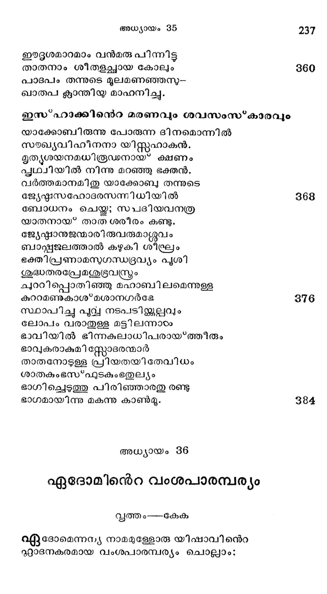